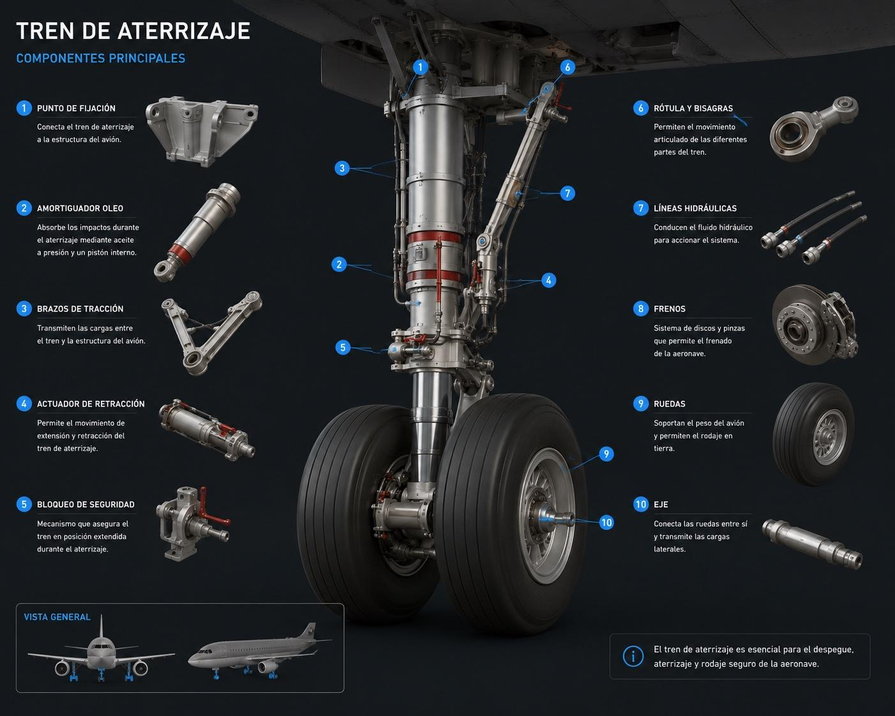

Mantenimiento del Tren de Aterrizaje

Inspección del sistema de aterrizaje.

Revisión técnica en hangar.

Técnicos realizando mantenimiento.
El tren de aterrizaje es el sistema que permite a las aeronaves despegar, aterrizar y desplazarse de manera segura sobre tierra.
No se retrae durante el vuelo.
Se guarda dentro del avión para reducir resistencia.
Usado en la mayoría de los aviones modernos.
Inspección del sistema de aterrizaje.
Revisión técnica en hangar.
Técnicos realizando mantenimiento.
Permiten el movimiento y aterrizaje.
Absorben impactos durante el aterrizaje.
Ayudan a detener la aeronave.
